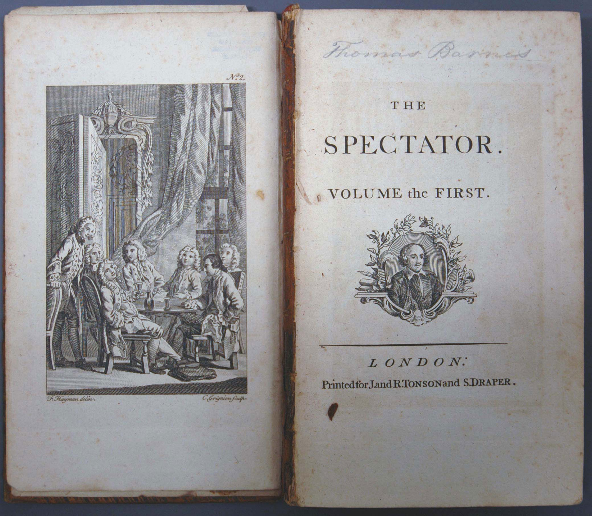
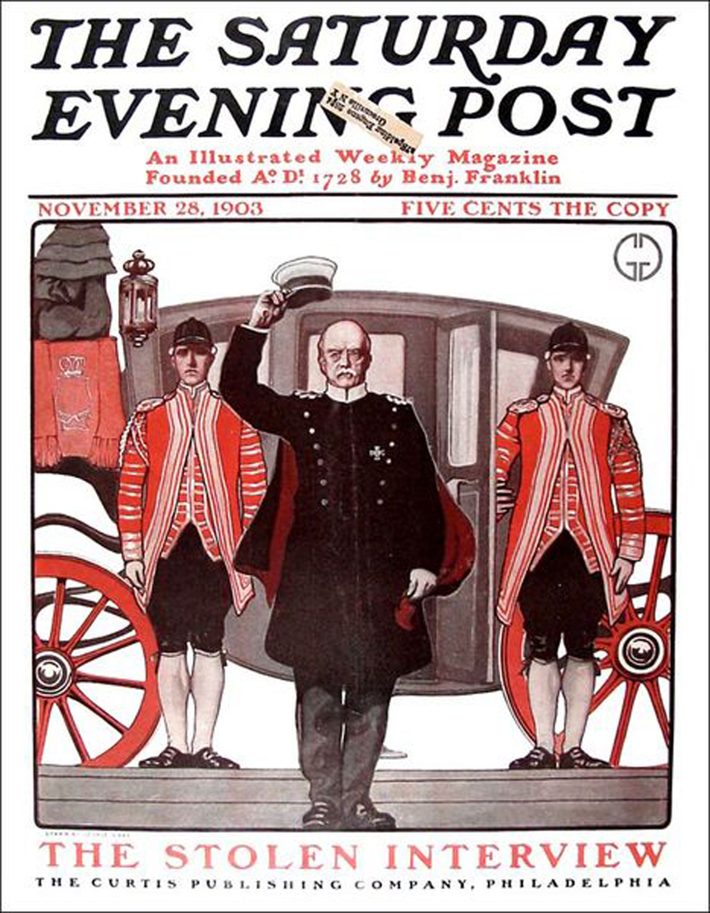

Like the newspaper, the magazine has a complex history shaped by the cultures in which it developed. Examining the industry’s roots and its transformation over time can contribute to a better understanding of the modern industry.
After the printing press became prevalent in Europe, early publishers began to conceptualize the magazine. Forerunners of the familiar modern magazine first appeared during the 17th century in the form of brochures, pamphlets, and almanacs. Soon, publishers realized that irregular publication schedules required too much time and energy. A gradual shift then occurred as publishers sought regular readers with specific interests. But the early magazine was unlike any other previous publication. It was not enough of a news source to be a newspaper, but it could not be considered pleasure reading either. Instead, early magazines occupied the middle ground between the two. Encyclopaedia Britannica, s.v. “History of Publishing,” http://www.britannica.com/EBchecked/topic/482597/publishing/28679/Magazine-publishing.
German theologian and poet Johann Rist published the first true magazine between 1663 and 1668. Titled Erbauliche Monaths-Unterredungen, or Edifying Monthly Discussions, Rist’s publication inspired a number of others to begin printing literary journals across Europe: Denis de Sallo’s French Journal des Sçavans (1665), the Royal Society’s English Philosophical Transactions (1665), and Francesco Nazzari’s Italian Giomale de’letterati (1668). In 1684, exiled Frenchman Pierre Bayle published Novelles de la République des Lettres in the Netherlands to escape French censorship. Profoundly affected by a general revival of learning during the 1600s, the publications inspired enthusiasm for education.
Another Frenchman, Jean Donneau de Vizé, published the first “periodical of amusement,” Le Mercure Galant (later renamed Mercure de France), in 1672, which contained news, short stories, and poetry. This combination of news and pleasurable reading became incredibly popular, causing other publications to imitate the magazine.Encyclopaedia Britannica, s.v. “History of Publishing,” http://www.britannica.com/EBchecked/topic/482597/publishing/28679/Magazine-publishing. This lighter magazine catered to a different reader than did the other, more intellectual publications of the day, offering articles for entertainment and enjoyment rather than for education.
With the arrival of the 18th century came an increase in literacy. Women, who enjoyed a considerable rise in literacy rates, began reading in record numbers. This growth affected the literary world as a whole, inspiring a large number of female writers to publish novels for female readers.Abby Wolf, “Introduction,” 19th Century Women Writers, PBS, http://www.pbs.org/wgbh/masterpiece/wives/writers/intro.html. This influx of female readers also helped magazines flourish as more women sought out the publications as a source of knowledge and entertainment. In fact, many magazines jumped at the chance to reach out to women. The Athenian Mercury, the first magazine written specifically for women, appeared in 1693.
Much as in newspaper publication, Great Britain closely followed Continental Europe’s lead in producing magazines. During the early 18th century, three major influential magazines published regularly in Great Britain: Robinson Crusoe author Daniel Defoe’s the Review, Sir Richard Steele’s the Tatler, and Joseph Addison and Steele’s the Spectator.
Figure 5.2
Great Britain’s first magazines emerged during the early 18th century, shortly after publishers had popularized the format in Europe.
All three of these publications were published either daily or several times a week. While they were supplied as frequently as newspapers, their content was closer to that of magazines. The Review focused primarily on domestic and foreign affairs and featured opinion-based political articles. The Spectator replaced the Tatler, which published from 1709 to 1711. Both Tatler and Spectator emphasized living and culture and frequently used humor to promote virtuous behavior.Abby Wolf, “Introduction,” 19th Century Women Writers, PBS, http://www.pbs.org/wgbh/masterpiece/wives/writers/intro.html. Tatler and Spectator, in particular, drew a large number of female readers, and both magazines eventually added female-targeted publications: Female Tatler in 1709 and Female Spectator in 1744.
The first American magazines debuted in 1741, when Andrew Bradford’s American Magazine and Benjamin Franklin’s General Magazine began publication in Philadelphia a mere 3 days apart from each other. Neither magazine lasted long, however; American Magazine folded after only 3 months and General Magazine after 6. The short-lived nature of the publications likely had less to do with the outlets themselves and more to do with the fact that they were “limited by too few readers with leisure time to read, high costs of publishing, and expensive distribution systems.”Joseph Straubhaar, Robert Larose, and Lucinda Davenport, Media Now: Understanding Media, Culture, and Technology (Boston: Wadsworth, 2009). Regardless of this early setback, magazines began to flourish during the latter half of the 18th century, and by the end of the 1700s, more than 100 magazines had appeared in the nascent United States. Despite this large publication figure, typical colonial magazines still recorded low circulationThe number of copies of a magazine distributed. figures and were considered highbrow.
All this changed during the 1830s when publishers began taking advantage of a general decline in the cost of printing and mailing publications and started producing less-expensive magazines with a wider audience in mind. Magazine style also transformed. While early magazines focused on improvement and reason, later versions focused on amusement. No longer were magazines focused on the elite class. Publishers took advantage of their freshly expanded audience and began offering family magazines, children’s magazines, and women’s magazines. Women’s publications again proved to be a highly lucrative market. One of the earliest American women’s magazines was Godey’s Lady’s Book, a Philadelphia-based monthly that printed between 1830 and 1898. This particular magazine reached out to female readers by employing nearly 150 women.
The first truly successful mass circulation magazine in the United States was The Saturday Evening Post. This weekly magazine first began printing in 1821 and remained in regular print production until 1969, when it briefly ceased circulation. However, in 1971 a new owner remodeled the magazine to focus on health and medical breakthroughs. From the time of its first publication in the early 1800s, The Saturday Evening Post quickly grew in popularity; by 1855, it had a circulation of 90,000 copies per year.Saturday Evening Post, “About,” http://www.saturdayeveningpost.com/about. Widely recognized for transforming the look of the magazine, the publication was the first to put artwork on its cover, a decision that The Saturday Evening Post has said “connected readers intimately with the magazine as a whole.”Saturday Evening Post, “About,” http://www.saturdayeveningpost.com/about. Certainly, The Saturday Evening Post took advantage of the format by featuring the work of famous artists such as Norman Rockwell. Using such recognizable artists boosted circulation as “Americans everywhere recognized the art of the Post and eagerly awaited the next issue because of it.”Saturday Evening Post, “About,” http://www.saturdayeveningpost.com/about.
Figure 5.3
The Saturday Evening Post popularized the use of artwork of its cover, setting a standard for other publications to follow.
But The Saturday Evening Post did not only feature famous artists; it also published works by famous authors including F. Scott Fitzgerald, Sinclair Lewis, and Ring Lardner. The popularity of these writers contributed to the continuing success of the magazine.
Another early U.S. mass magazine was Youth’s Companion, which published between 1827 and 1929 when it merged with The American Boy. Based in Boston, Massachusetts, this periodical featured fairly religious content and developed a reputation as a wholesome magazine that encouraged young readers to be virtuous and pious. Eventually, the magazine sought to reach a larger, adult audience by including tame entertainment pieces. Nevertheless, the magazine in time began featuring the work of prominent writers for both children and adults and became “a literary force to be reckoned with.”“Youth’s Companion,” Nineteenth-Century American Children and What They Read: Some of Their Magazines, http://www.merrycoz.org/MAGS2.HTM.
While magazines such as The Saturday Evening Post and Youth’s Companion were fairly popular, the industry still struggled to achieve widespread circulation. Most publications cost the then-hefty sum of 25 or 35 cents per issue, limiting readership to the relative few who could afford them. This all changed in 1893 when Samuel Sidney McClure began selling McClure’s Magazine, originally a literary and political magazine, at the bargain price of only 15 cents per issue. The trend caught on. Soon, Cosmopolitan (founded 1886) began selling for 12.5 cents, while Munsey Magazine (1886–1929) sold for only 10 cents. All three of these periodicals were widely successful. Frank A. Munsey, owner of Munsey Magazine, estimated that between 1893 and 1899 “the ten-cent magazine increased the magazine-buying public from 250,000 to 750,000 persons.”Encyclopaedia Britannica, s.v. “History of Publishing,” http://www.britannica.com/EBchecked/topic/482597/publishing/28679/Magazine-publishing. For the first time, magazines could be sold for less than they cost to produce. Because of greater circulation, publications could charge more for advertising space and decrease the cost to the customer.
By 1900, advertising had become a crucial component of the magazine business. In the early days of the industry, many publications attempted to keep advertisements out of their issues because of publishers’ natural fondness toward literature and writing.Encyclopaedia Britannica, s.v. “History of Publishing,” http://www.britannica.com/EBchecked/topic/482597/publishing/28679/Magazine-publishing. However, once circulation increased, advertisers sought out space in magazines to reach the larger audience. Magazines responded by raising advertising rates, ultimately increasing their profitability. By the turn of the 20th century, advertising became the norm in magazines, particularly in some women’s magazine, where advertisements accounted for nearly half of all content.
The arrival of the 20th century brought with it new types of magazines, including news, business, and picture magazines. In time, these types of publications came to dominate the industry and attract vast readerships.
As publishers became interested in succinctly presenting the fresh increase of worldwide information that technology made available during the late 19th and early 20th centuries, they designed the newsmagazineA journal that specializes in reporting and commenting on current events.. In 1923, Time became the first newsmagazine that focused on world news. Time first began publication with the proposition that “people are uninformed because no publication has adapted itself to the time which busy men are able to spend simply keeping informed.”Encyclopaedia Britannica, s.v. “History of Publishing,” http://www.britannica.com/EBchecked/topic/482597/publishing/28679/Magazine-publishing. Although the periodical struggled during its early years, Time hit its stride in 1928 and its readership grew. The magazine’s signature style of well-researched news presented in a succinct manner contributed greatly to its eventual success.
Several other newsmagazines came onto the market during this era as well. Business Week was founded in 1929 with a focus on the global market. Forbes, currently one of the most popular financial magazines, began printing in 1917 as a biweekly publication. In 1933, a former Time foreign editor founded Newsweek, which now has a circulation of nearly 4 million readers. Today, Newsweek and Time continue to compete with each other, furthering a trend that began in the early years of Newsweek.
PhotojournalismThe telling of stories through photography., or the telling of stories through photography, also became popular during the early 20th century. Although magazines had been running illustrations since the 19th century, as photography grew in popularity so did picture magazinesA journal that specializes in photography and typically features large spreads of photos with short captions and few articles.. The most influential picture magazine was Henry Luce’s Life, which regularly published between 1936 and 1972. Within weeks of its initial publication, Life had a circulation of 1 million. In Luce’s words, the publication aimed “to see life; to see the world; to witness great events; to watch the faces of the poor and the gestures of the proud; to see strange things.”Encyclopaedia Britannica, s.v. “History of Publishing,” http://www.britannica.com/EBchecked/topic/482597/publishing/28679/Magazine-publishing. It did not disappoint. Widely credited with establishing photojournalism, Life captured the attention of many on first read. With 96 large-format glossy pages, even the inaugural issue sold out. The opening photograph depicted an obstetrician holding a newborn baby with the caption “Life begins”.
While Life was the most influential picture magazine, it was certainly not the only photo-centric publication. Popular biweekly picture magazine Look printed between 1937 and 1971, claiming to compete with Life by reaching out to a larger audience. Although Look offered Life stiff competition during their almost identical print runs, the latter magazine is widely considered to have a greater legacy. Several other photo magazines—including Focus, Peek, Foto, Pic, and Click—also took their inspiration from Life.
During the late 20th and early 21st centuries, the advent of online technology began to greatly affect both the magazine industry and the print media as a whole. Much like newspaper publishers, magazine publishers have had to rethink their structure to reach out to an increasingly online market. The specifics of the changes made to the magazine industry will be discussed in further detail later in this chapter.
Select a magazine that you enjoy reading and research its history. Then, answer the following writing prompts.